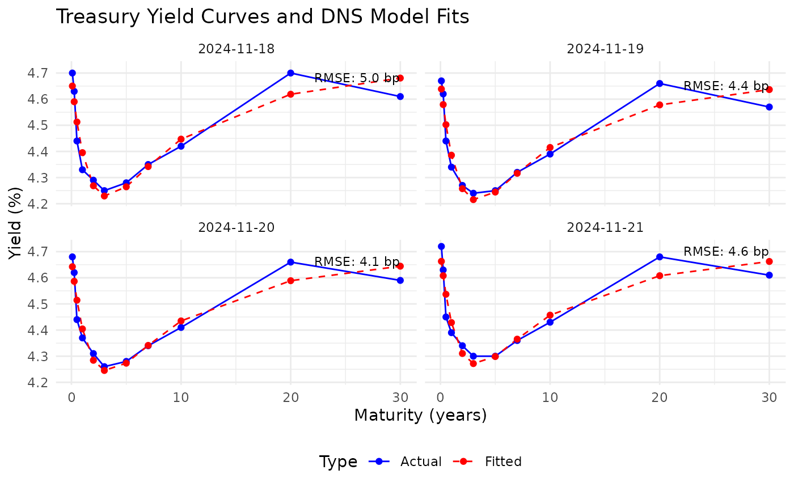

Dynamic Nelson-Siegel Model Visualization Functions
Source:R/dns-visualization.r
plot_yield_curves.RdFunctions for visualizing DNS model results and yield curves.
Creates a plot comparing actual yield curves with DNS model fits.
Usage
plot_yield_curves(
yield_data,
dns_result,
dates_to_plot = NULL,
max_plots = 5,
show_rmse = TRUE
)Arguments
- yield_data
Data frame. The original yield curve data.
- dns_result
List. The DNS fitting result from fit_dns_model().
- dates_to_plot
Date vector. Specific dates to plot. If NULL, uses the first few dates.
- max_plots
Integer. Maximum number of plots to create if dates_to_plot is NULL.
- show_rmse
Logical. If TRUE, display RMSE values on the plots.
Examples
data(treasury_yields)
dns_result <- fit_dns_model(treasury_yields, n_days = 30, show_progress = FALSE)
#> Warning: Parameters rest on a bound in some fits: lambda on 14 (of 30 dates). The factor decomposition is not identified on those dates; see the at_bound element of the result, widen lower_bounds/upper_bounds, or check the yield scale.
plot_yield_curves(treasury_yields, dns_result, max_plots = 4)
